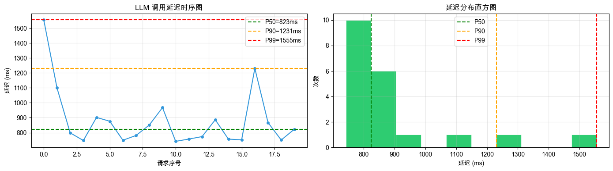
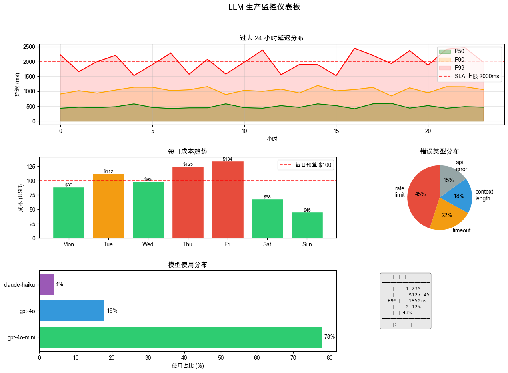

第七章：生产环境 — 03 可观测性与监控#
生产环境中的 LLM 应用需要可观测性：日志、追踪、指标、告警。
没有可观测性，你就是在黑盒中飞行。当系统出问题时，你不知道：
是哪个请求失败了？
延迟在什么时候开始变高？
今天花了多少钱？
有多少次因为限流而重试？
可观测性的三大支柱：
日志（Logs） → 每次事件的详细记录（调试用）
指标（Metrics）→ 聚合数据（p99延迟、错误率、成本）
追踪（Traces）→ 一次请求的完整链路（分布式系统）
本章目标： 从零构建一套 LLM 应用的可观测性基础设施。
import json
import os
import time
import uuid
import random
from datetime import datetime, timedelta
from collections import defaultdict, deque
import litellm
litellm.drop_params = True
from dotenv import load_dotenv
load_dotenv()
MODEL = os.getenv("LLM_MODEL", "gpt-4o-mini")
litellm.set_verbose = False
print(f"使用模型: {MODEL}")
print("可观测性工具包初始化完成")
print(f"当前时间: {datetime.now().isoformat()}")
# gpt-5/o系列不支持自定义temperature值，统一用安全wrapper
def _c(**kw):
_m = kw.get('model', MODEL)
if any(_m.startswith(p) for p in ('openai/gpt-5','openai/o1','openai/o3','openai/o4')):
kw.pop('temperature', None)
return litellm.completion(**kw)
使用模型: openai/gpt-5-mini
可观测性工具包初始化完成
当前时间: 2026-03-14T21:20:18.942874
Section 1：基础日志#
结构化 JSON 日志是机器可读的，便于后续查询分析。
class LLMLogger:
"""
LLM 调用日志包装器
每次 LLM 调用自动记录：
- 时间戳、模型、请求内容
- Token 用量（prompt + completion + total）
- 延迟（毫秒）
- 完成原因（finish_reason）
- 错误信息（如有）
"""
def __init__(self, log_file: str = None, print_logs: bool = True):
self.log_file = log_file or "/tmp/llm_calls.jsonl"
self.print_logs = print_logs
self.logs = []
# 打开日志文件
self._file = open(self.log_file, "a", encoding="utf-8")
def completion(self, model: str = None, messages: list = None,
request_id: str = None, **kwargs):
"""带日志的 litellm.completion 包装"""
model = model or MODEL
request_id = request_id or str(uuid.uuid4())[:8]
start_time = time.time()
error_info = None
response = None
try:
response = _c(
model=model,
messages=messages,
**kwargs
)
return response
except Exception as e:
error_info = {
"type": type(e).__name__,
"message": str(e)[:200]
}
raise
finally:
latency_ms = int((time.time() - start_time) * 1000)
log_entry = {
"timestamp": datetime.now().isoformat(),
"request_id": request_id,
"model": model,
"prompt_tokens": response.usage.prompt_tokens if response else 0,
"completion_tokens": response.usage.completion_tokens if response else 0,
"total_tokens": response.usage.total_tokens if response else 0,
"latency_ms": latency_ms,
"finish_reason": response.choices[0].finish_reason if response else None,
"error": error_info,
"status": "success" if error_info is None else "error"
}
self.logs.append(log_entry)
self._file.write(json.dumps(log_entry, ensure_ascii=False) + "\n")
self._file.flush()
if self.print_logs:
status_icon = "✅" if log_entry["status"] == "success" else "❌"
print(f"{status_icon} [{log_entry['timestamp'][:19]}] "
f"req={request_id} model={model} "
f"tokens={log_entry['total_tokens']} "
f"latency={latency_ms}ms "
f"finish={log_entry['finish_reason']}")
def summary(self):
"""打印调用摘要"""
if not self.logs:
print("无日志")
return
success_logs = [l for l in self.logs if l["status"] == "success"]
total_tokens = sum(l["total_tokens"] for l in success_logs)
avg_latency = sum(l["latency_ms"] for l in success_logs) / len(success_logs) if success_logs else 0
print(f"\n日志摘要（{len(self.logs)} 次调用）：")
print(f" 成功: {len(success_logs)}, 失败: {len(self.logs) - len(success_logs)}")
print(f" 总 tokens: {total_tokens:,}")
print(f" 平均延迟: {avg_latency:.0f}ms")
print(f" 日志文件: {self.log_file}")
def __del__(self):
if hasattr(self, '_file') and self._file:
self._file.close()
# 演示：记录 5 次 LLM 调用
logger = LLMLogger(print_logs=True)
test_queries = [
"用一句话解释什么是 REST API",
"Python 中如何读取文件？",
"什么是 Docker 容器？",
"解释 Git 的分支管理",
"什么是微服务架构？",
]
print("记录 LLM 调用日志：")
print("-" * 80)
for i, query in enumerate(test_queries):
logger.completion(
model=MODEL,
messages=[{"role": "user", "content": query}],
request_id=f"req-{i+1:03d}",
max_tokens=60,
temperature=0
)
logger.summary()
记录 LLM 调用日志：
--------------------------------------------------------------------------------
✅ [2026-03-14T21:20:20] req=req-001 model=openai/gpt-5-mini tokens=74 latency=1523ms finish=length
✅ [2026-03-14T21:20:21] req=req-002 model=openai/gpt-5-mini tokens=72 latency=1423ms finish=length
✅ [2026-03-14T21:20:23] req=req-003 model=openai/gpt-5-mini tokens=73 latency=1414ms finish=length
✅ [2026-03-14T21:20:24] req=req-004 model=openai/gpt-5-mini tokens=72 latency=1321ms finish=length
✅ [2026-03-14T21:20:26] req=req-005 model=openai/gpt-5-mini tokens=73 latency=1526ms finish=length
日志摘要（5 次调用）：
成功: 5, 失败: 0
总 tokens: 364
平均延迟: 1441ms
日志文件: /tmp/llm_calls.jsonl
Section 2：litellm Callbacks#
litellm 原生支持 callback 机制，无需修改每个调用点，全局自动捕获所有调用。
from litellm.integrations.custom_logger import CustomLogger
class LLMCallbackLogger(CustomLogger):
"""
全局 LLM 回调日志器
注册后，所有 litellm.completion 调用都会自动触发，
无需在每个调用点手动记录。
"""
def __init__(self):
super().__init__()
self.call_log = []
self.error_log = []
def log_success_event(self, kwargs, response_obj, start_time, end_time):
"""每次成功调用后触发"""
latency_ms = int((end_time - start_time).total_seconds() * 1000)
entry = {
"timestamp": end_time.isoformat(),
"model": kwargs.get("model"),
"prompt_tokens": response_obj.usage.prompt_tokens,
"completion_tokens": response_obj.usage.completion_tokens,
"latency_ms": latency_ms,
"finish_reason": response_obj.choices[0].finish_reason,
"status": "success"
}
self.call_log.append(entry)
print(f" [Callback] ✅ {entry['model']} | {entry['total_tokens'] if 'total_tokens' in entry else entry['prompt_tokens'] + entry['completion_tokens']}tok | {latency_ms}ms")
def log_failure_event(self, kwargs, response_obj, start_time, end_time):
"""每次失败调用后触发"""
entry = {
"timestamp": end_time.isoformat() if end_time else datetime.now().isoformat(),
"model": kwargs.get("model"),
"error": str(response_obj)[:200] if response_obj else "Unknown error",
"status": "error"
}
self.error_log.append(entry)
print(f" [Callback] ❌ {entry['model']} | Error: {entry['error'][:50]}")
def get_stats(self):
"""获取统计信息"""
if not self.call_log:
return {}
latencies = [e["latency_ms"] for e in self.call_log]
tokens = [e["prompt_tokens"] + e["completion_tokens"] for e in self.call_log]
return {
"total_calls": len(self.call_log),
"error_count": len(self.error_log),
"avg_latency_ms": sum(latencies) / len(latencies),
"total_tokens": sum(tokens),
}
# 注册全局 callback
callback_logger = LLMCallbackLogger()
litellm.callbacks = [callback_logger]
print("全局 Callback 已注册，以下调用无需手动记录：")
print("-" * 60)
# 普通调用，callback 自动触发
for query in ["解释 Python 装饰器", "什么是 TCP/IP？", "Git rebase 和 merge 的区别"]:
response = _c(
model=MODEL,
messages=[{"role": "user", "content": query}],
max_tokens=50,
temperature=0
)
# 清除 callback（避免影响后续 section）
litellm.callbacks = []
stats = callback_logger.get_stats()
print(f"\nCallback 统计：")
print(f" 总调用次数: {stats.get('total_calls', 0)}")
print(f" 错误次数: {stats.get('error_count', 0)}")
print(f" 总tokens: {stats.get('total_tokens', 0):,}")
print(f" 平均延迟: {stats.get('avg_latency_ms', 0):.0f}ms")
全局 Callback 已注册，以下调用无需手动记录：
------------------------------------------------------------
[Callback] ✅ gpt-5-mini | 62tok | 1998ms
[Callback] ✅ gpt-5-mini | 61tok | 1241ms
Callback 统计： [Callback] ✅ gpt-5-mini | 63tok | 1505ms
总调用次数: 2
错误次数: 0
总tokens: 123
平均延迟: 1620ms
Section 3：延迟追踪#
P50/P90/P99 延迟是衡量 LLM 服务性能的核心指标。P99 = 99% 的请求都在这个时间内完成。
class LatencyTracker:
"""
延迟追踪器：记录和分析 LLM 调用延迟
"""
def __init__(self, window_size: int = 1000):
"""window_size: 保留最近 N 次记录"""
self.latencies = deque(maxlen=window_size)
self.by_model = defaultdict(list)
self.slow_threshold_ms = 2000 # 超过 2s 视为慢请求
def record(self, latency_ms: float, model: str = "unknown",
request_id: str = ""):
"""记录一次延迟"""
entry = {
"latency_ms": latency_ms,
"model": model,
"request_id": request_id,
"timestamp": datetime.now().isoformat(),
"is_slow": latency_ms > self.slow_threshold_ms
}
self.latencies.append(entry)
self.by_model[model].append(latency_ms)
def percentile(self, p: float) -> float:
"""计算第 p 百分位延迟"""
if not self.latencies:
return 0.0
sorted_latencies = sorted(e["latency_ms"] for e in self.latencies)
idx = int(len(sorted_latencies) * p / 100)
idx = min(idx, len(sorted_latencies) - 1)
return sorted_latencies[idx]
def stats(self) -> dict:
"""延迟统计"""
if not self.latencies:
return {}
all_latencies = [e["latency_ms"] for e in self.latencies]
slow_count = sum(1 for e in self.latencies if e["is_slow"])
return {
"count": len(self.latencies),
"min_ms": min(all_latencies),
"max_ms": max(all_latencies),
"avg_ms": sum(all_latencies) / len(all_latencies),
"p50_ms": self.percentile(50),
"p90_ms": self.percentile(90),
"p99_ms": self.percentile(99),
"slow_count": slow_count,
"slow_rate": slow_count / len(self.latencies)
}
def print_histogram(self, bins: int = 10):
"""打印 ASCII 延迟直方图"""
if not self.latencies:
print("无数据")
return
all_latencies = sorted(e["latency_ms"] for e in self.latencies)
min_val, max_val = all_latencies[0], all_latencies[-1]
bin_size = (max_val - min_val) / bins if max_val > min_val else 1
bucket_counts = defaultdict(int)
for lat in all_latencies:
bucket = int((lat - min_val) / bin_size)
bucket = min(bucket, bins - 1)
bucket_counts[bucket] += 1
max_count = max(bucket_counts.values()) if bucket_counts else 1
bar_width = 30
print("延迟分布直方图：")
print("-" * 60)
for b in range(bins):
range_start = int(min_val + b * bin_size)
range_end = int(min_val + (b + 1) * bin_size)
count = bucket_counts.get(b, 0)
bar_len = int(count / max_count * bar_width)
bar = "█" * bar_len
print(f" {range_start:>5}-{range_end:<5}ms │{bar:<{bar_width}} {count}")
# 演示：记录 20 次实际 LLM 调用的延迟
tracker = LatencyTracker()
print("实测延迟追踪（20次调用）：")
print("-" * 50)
queries = [f"用10字解释：{topic}" for topic in [
"云计算", "机器学习", "API", "微服务", "容器化",
"DevOps", "CI/CD", "Kubernetes", "Serverless", "边缘计算",
"区块链", "大数据", "数据湖", "流处理", "批处理",
"负载均衡", "服务网格", "API网关", "事件驱动", "函数计算"
]]
for i, query in enumerate(queries):
start = time.time()
_c(
model=MODEL,
messages=[{"role": "user", "content": query}],
max_tokens=20,
temperature=0
)
latency = (time.time() - start) * 1000
tracker.record(latency, model=MODEL, request_id=f"req-{i+1:02d}")
print(f" [{i+1:02d}] {latency:>7.0f}ms")
print("\n" + "=" * 60)
s = tracker.stats()
print(f"延迟统计：")
print(f" P50: {s['p50_ms']:>7.0f}ms")
print(f" P90: {s['p90_ms']:>7.0f}ms")
print(f" P99: {s['p99_ms']:>7.0f}ms")
print(f" 平均: {s['avg_ms']:>7.0f}ms")
print(f" 最大: {s['max_ms']:>7.0f}ms")
print(f" 慢请求（>{tracker.slow_threshold_ms}ms）: {s['slow_count']} ({s['slow_rate']:.0%})")
print()
tracker.print_histogram()
实测延迟追踪（20次调用）：
--------------------------------------------------
[01] 1555ms [Callback] ✅ gpt-5-mini | 33tok | 1554ms
[02] 1100ms [Callback] ✅ gpt-5-mini | 33tok | 1099ms
[03] 799ms [Callback] ✅ gpt-5-mini | 32tok | 797ms
[04] 747ms [Callback] ✅ gpt-5-mini | 33tok | 746ms
[05] 902ms [Callback] ✅ gpt-5-mini | 34tok | 901ms
[06] 876ms [Callback] ✅ gpt-5-mini | 33tok | 875ms
[07] 749ms [Callback] ✅ gpt-5-mini | 33tok | 748ms
[08] 781ms [Callback] ✅ gpt-5-mini | 33tok | 780ms
[09] 851ms [Callback] ✅ gpt-5-mini | 33tok | 850ms
[10] 968ms [Callback] ✅ gpt-5-mini | 34tok | 966ms
[11] 742ms [Callback] ✅ gpt-5-mini | 34tok | 741ms
[12] 757ms [Callback] ✅ gpt-5-mini | 33tok | 756ms
[13] 774ms [Callback] ✅ gpt-5-mini | 33tok | 772ms
[14] 886ms [Callback] ✅ gpt-5-mini | 33tok | 885ms
[15] 756ms [Callback] ✅ gpt-5-mini | 33tok | 755ms
[16] 752ms [Callback] ✅ gpt-5-mini | 35tok | 751ms
[17] 1231ms [Callback] ✅ gpt-5-mini | 34tok | 1229ms
[18] 867ms [Callback] ✅ gpt-5-mini | 34tok | 867ms
[19] 751ms [Callback] ✅ gpt-5-mini | 34tok | 749ms
[20] 823ms [Callback] ✅ gpt-5-mini | 33tok | 822ms
============================================================
延迟统计：
P50: 823ms
P90: 1231ms
P99: 1555ms
平均: 883ms
最大: 1555ms
慢请求（>2000ms）: 0 (0%)
延迟分布直方图：
------------------------------------------------------------
741-823 ms │██████████████████████████████ 10
823-904 ms │██████████████████ 6
904-985 ms │███ 1
985-1067 ms │ 0
1067-1148 ms │███ 1
1148-1229 ms │ 0
1229-1311 ms │███ 1
1311-1392 ms │ 0
1392-1473 ms │ 0
1473-1555 ms │███ 1
# matplotlib 延迟可视化
try:
import matplotlib.pyplot as plt
import matplotlib
matplotlib.rcParams['font.family'] = ['Arial Unicode MS', 'DejaVu Sans']
all_latencies = [e["latency_ms"] for e in tracker.latencies]
fig, axes = plt.subplots(1, 2, figsize=(14, 4))
# 图1：时序延迟
ax1 = axes[0]
ax1.plot(all_latencies, marker="o", markersize=4, color="#3498db", linewidth=1.5)
ax1.axhline(y=tracker.stats()["p50_ms"], color="green", linestyle="--",
label=f"P50={tracker.stats()['p50_ms']:.0f}ms")
ax1.axhline(y=tracker.stats()["p90_ms"], color="orange", linestyle="--",
label=f"P90={tracker.stats()['p90_ms']:.0f}ms")
ax1.axhline(y=tracker.stats()["p99_ms"], color="red", linestyle="--",
label=f"P99={tracker.stats()['p99_ms']:.0f}ms")
ax1.set_xlabel("请求序号")
ax1.set_ylabel("延迟 (ms)")
ax1.set_title("LLM 调用延迟时序图")
ax1.legend()
ax1.grid(True, alpha=0.3)
# 图2：分布直方图
ax2 = axes[1]
ax2.hist(all_latencies, bins=10, color="#2ecc71", edgecolor="white", linewidth=0.5)
ax2.axvline(x=tracker.stats()["p50_ms"], color="green", linestyle="--", label="P50")
ax2.axvline(x=tracker.stats()["p90_ms"], color="orange", linestyle="--", label="P90")
ax2.axvline(x=tracker.stats()["p99_ms"], color="red", linestyle="--", label="P99")
ax2.set_xlabel("延迟 (ms)")
ax2.set_ylabel("次数")
ax2.set_title("延迟分布直方图")
ax2.legend()
ax2.grid(True, alpha=0.3)
plt.tight_layout()
plt.savefig("/tmp/llm_latency.png", dpi=150, bbox_inches="tight")
plt.show()
print("图表已保存到 /tmp/llm_latency.png")
except ImportError:
print("matplotlib 未安装，跳过可视化（pip install matplotlib）")

图表已保存到 /tmp/llm_latency.png
Section 4：成本追踪#
按模型、按天追踪 LLM 成本，设置预算告警。
# 模型价格表
MODEL_PRICES_PER_TOKEN = {
"gpt-4o": {"input": 2.50 / 1e6, "output": 10.00 / 1e6},
"gpt-4o-mini": {"input": 0.15 / 1e6, "output": 0.60 / 1e6},
"claude-3-5-sonnet": {"input": 3.00 / 1e6, "output": 15.00 / 1e6},
"claude-3-haiku": {"input": 0.25 / 1e6, "output": 1.25 / 1e6},
}
class CostTracker:
"""
LLM 成本追踪器
- 按模型分组统计
- 按天统计
- 超预算告警
"""
def __init__(self, daily_budget_usd: float = 100.0):
self.daily_budget = daily_budget_usd
self.records = []
self.alerts = []
def _estimate_cost(self, model: str, prompt_tokens: int, completion_tokens: int) -> float:
"""估算单次调用成本"""
# 标准化模型名称
model_key = None
for key in MODEL_PRICES_PER_TOKEN:
if key in model:
model_key = key
break
if model_key:
prices = MODEL_PRICES_PER_TOKEN[model_key]
return prompt_tokens * prices["input"] + completion_tokens * prices["output"]
# 使用 litellm 获取成本
try:
return litellm.completion_cost(
model=model,
prompt_tokens=prompt_tokens,
completion_tokens=completion_tokens
)
except:
return 0.0
def record(self, model: str, prompt_tokens: int, completion_tokens: int,
timestamp: datetime = None):
"""记录一次调用成本"""
timestamp = timestamp or datetime.now()
cost = self._estimate_cost(model, prompt_tokens, completion_tokens)
self.records.append({
"timestamp": timestamp,
"date": timestamp.date().isoformat(),
"model": model,
"prompt_tokens": prompt_tokens,
"completion_tokens": completion_tokens,
"cost_usd": cost
})
# 检查今日预算
today_cost = self.daily_cost(timestamp.date().isoformat())
if today_cost > self.daily_budget:
alert = f"⚠️ 预算告警：今日成本 ${today_cost:.2f} 超过预算 ${self.daily_budget:.2f}！"
if alert not in self.alerts:
self.alerts.append(alert)
print(alert)
elif today_cost > self.daily_budget * 0.8:
print(f"🔔 预警：今日成本 ${today_cost:.4f}，已达预算的 {today_cost/self.daily_budget:.0%}")
def daily_cost(self, date_str: str = None) -> float:
"""获取某天的总成本"""
date_str = date_str or datetime.now().date().isoformat()
return sum(r["cost_usd"] for r in self.records if r["date"] == date_str)
def daily_cost_report(self) -> dict:
"""生成每日成本报告"""
report = defaultdict(lambda: {"cost": 0.0, "calls": 0, "tokens": 0})
for r in self.records:
date = r["date"]
report[date]["cost"] += r["cost_usd"]
report[date]["calls"] += 1
report[date]["tokens"] += r["prompt_tokens"] + r["completion_tokens"]
return dict(report)
def model_cost_report(self) -> dict:
"""按模型统计成本"""
report = defaultdict(lambda: {"cost": 0.0, "calls": 0})
for r in self.records:
report[r["model"]]["cost"] += r["cost_usd"]
report[r["model"]]["calls"] += 1
return dict(report)
# 模拟 7 天的使用数据
cost_tracker = CostTracker(daily_budget_usd=0.10) # 演示用低预算
print("模拟 7 天的 LLM 成本数据")
print("=" * 60)
# 生成模拟数据
base_date = datetime.now() - timedelta(days=6)
models_to_simulate = ["gpt-4o", "gpt-4o-mini", "gpt-4o-mini"]
for day in range(7):
day_date = base_date + timedelta(days=day)
calls_per_day = random.randint(50, 200)
for _ in range(calls_per_day):
model = random.choice(models_to_simulate)
prompt_tokens = random.randint(100, 500)
completion_tokens = random.randint(50, 200)
call_time = day_date + timedelta(hours=random.randint(0, 23))
cost_tracker.record(model, prompt_tokens, completion_tokens, call_time)
# 生成报告
daily_report = cost_tracker.daily_cost_report()
print(f"\n每日成本报告：")
print(f"{'日期':<12} {'成本':>10} {'调用次数':>10} {'总tokens':>12} {'状态'}")
print("-" * 60)
for date in sorted(daily_report.keys()):
data = daily_report[date]
cost = data["cost"]
budget_ratio = cost / cost_tracker.daily_budget
if budget_ratio > 1.0:
status = "❌ 超预算"
elif budget_ratio > 0.8:
status = "⚠️ 临近上限"
else:
status = "✅ 正常"
print(f"{date:<12} ${cost:>8.4f} {data['calls']:>10,} {data['tokens']:>12,} {status}")
total_cost = sum(d["cost"] for d in daily_report.values())
print("-" * 60)
print(f"{'7天总计':<12} ${total_cost:>8.4f}")
print("\n按模型成本分布：")
model_report = cost_tracker.model_cost_report()
for model, data in sorted(model_report.items(), key=lambda x: -x[1]["cost"]):
ratio = data["cost"] / total_cost
bar = "█" * int(ratio * 30)
print(f" {model:<20} ${data['cost']:>6.4f} ({ratio:.0%}) {bar}")
模拟 7 天的 LLM 成本数据
============================================================
🔔 预警：今日成本 $0.0818，已达预算的 82%
🔔 预警：今日成本 $0.0836，已达预算的 84%
🔔 预警：今日成本 $0.0856，已达预算的 86%
🔔 预警：今日成本 $0.0869，已达预算的 87%
🔔 预警：今日成本 $0.0892，已达预算的 89%
🔔 预警：今日成本 $0.0921，已达预算的 92%
🔔 预警：今日成本 $0.0939，已达预算的 94%
🔔 预警：今日成本 $0.0961，已达预算的 96%
🔔 预警：今日成本 $0.0972，已达预算的 97%
🔔 预警：今日成本 $0.0996，已达预算的 100%
⚠️ 预算告警：今日成本 $0.10 超过预算 $0.10！
⚠️ 预算告警：今日成本 $0.11 超过预算 $0.10！
⚠️ 预算告警：今日成本 $0.12 超过预算 $0.10！
🔔 预警：今日成本 $0.0813，已达预算的 81%
🔔 预警：今日成本 $0.0831，已达预算的 83%
🔔 预警：今日成本 $0.0851，已达预算的 85%
🔔 预警：今日成本 $0.0868，已达预算的 87%
🔔 预警：今日成本 $0.0895，已达预算的 90%
🔔 预警：今日成本 $0.0918，已达预算的 92%
🔔 预警：今日成本 $0.0928，已达预算的 93%
🔔 预警：今日成本 $0.0938，已达预算的 94%
🔔 预警：今日成本 $0.0954，已达预算的 95%
🔔 预警：今日成本 $0.0972，已达预算的 97%
🔔 预警：今日成本 $0.0991，已达预算的 99%
⚠️ 预算告警：今日成本 $0.13 超过预算 $0.10！
⚠️ 预算告警：今日成本 $0.14 超过预算 $0.10！
⚠️ 预算告警：今日成本 $0.15 超过预算 $0.10！
🔔 预警：今日成本 $0.0802，已达预算的 80%
🔔 预警：今日成本 $0.0828，已达预算的 83%
🔔 预警：今日成本 $0.0854，已达预算的 85%
🔔 预警：今日成本 $0.0866，已达预算的 87%
🔔 预警：今日成本 $0.0891，已达预算的 89%
🔔 预警：今日成本 $0.0900，已达预算的 90%
🔔 预警：今日成本 $0.0922，已达预算的 92%
🔔 预警：今日成本 $0.0953，已达预算的 95%
🔔 预警：今日成本 $0.0974，已达预算的 97%
🔔 预警：今日成本 $0.0984，已达预算的 98%
⚠️ 预算告警：今日成本 $0.16 超过预算 $0.10！
⚠️ 预算告警：今日成本 $0.17 超过预算 $0.10！
⚠️ 预算告警：今日成本 $0.18 超过预算 $0.10！
⚠️ 预算告警：今日成本 $0.19 超过预算 $0.10！
⚠️ 预算告警：今日成本 $0.20 超过预算 $0.10！
⚠️ 预算告警：今日成本 $0.21 超过预算 $0.10！
⚠️ 预算告警：今日成本 $0.22 超过预算 $0.10！
⚠️ 预算告警：今日成本 $0.23 超过预算 $0.10！
🔔 预警：今日成本 $0.0814，已达预算的 81%
🔔 预警：今日成本 $0.0838，已达预算的 84%
⚠️ 预算告警：今日成本 $0.24 超过预算 $0.10！
🔔 预警：今日成本 $0.0858，已达预算的 86%
🔔 预警：今日成本 $0.0875，已达预算的 88%
🔔 预警：今日成本 $0.0889，已达预算的 89%
🔔 预警：今日成本 $0.0907，已达预算的 91%
🔔 预警：今日成本 $0.0937，已达预算的 94%
🔔 预警：今日成本 $0.0950，已达预算的 95%
🔔 预警：今日成本 $0.0960，已达预算的 96%
🔔 预警：今日成本 $0.0969，已达预算的 97%
🔔 预警：今日成本 $0.0993，已达预算的 99%
🔔 预警：今日成本 $0.0829，已达预算的 83%
🔔 预警：今日成本 $0.0860，已达预算的 86%
🔔 预警：今日成本 $0.0878，已达预算的 88%
🔔 预警：今日成本 $0.0887，已达预算的 89%
🔔 预警：今日成本 $0.0914，已达预算的 91%
🔔 预警：今日成本 $0.0946，已达预算的 95%
🔔 预警：今日成本 $0.0961，已达预算的 96%
🔔 预警：今日成本 $0.0985，已达预算的 99%
⚠️ 预算告警：今日成本 $0.25 超过预算 $0.10！
⚠️ 预算告警：今日成本 $0.26 超过预算 $0.10！
⚠️ 预算告警：今日成本 $0.27 超过预算 $0.10！
⚠️ 预算告警：今日成本 $0.28 超过预算 $0.10！
⚠️ 预算告警：今日成本 $0.29 超过预算 $0.10！
⚠️ 预算告警：今日成本 $0.30 超过预算 $0.10！
⚠️ 预算告警：今日成本 $0.31 超过预算 $0.10！
🔔 预警：今日成本 $0.0814，已达预算的 81%
🔔 预警：今日成本 $0.0823，已达预算的 82%
🔔 预警：今日成本 $0.0844，已达预算的 84%
🔔 预警：今日成本 $0.0865，已达预算的 86%
🔔 预警：今日成本 $0.0880，已达预算的 88%
🔔 预警：今日成本 $0.0902，已达预算的 90%
🔔 预警：今日成本 $0.0928，已达预算的 93%
🔔 预警：今日成本 $0.0949，已达预算的 95%
🔔 预警：今日成本 $0.0964，已达预算的 96%
🔔 预警：今日成本 $0.0988，已达预算的 99%
⚠️ 预算告警：今日成本 $0.32 超过预算 $0.10！
🔔 预警：今日成本 $0.0813，已达预算的 81%
🔔 预警：今日成本 $0.0837，已达预算的 84%
🔔 预警：今日成本 $0.0850，已达预算的 85%
🔔 预警：今日成本 $0.0867，已达预算的 87%
🔔 预警：今日成本 $0.0893，已达预算的 89%
🔔 预警：今日成本 $0.0903，已达预算的 90%
🔔 预警：今日成本 $0.0925，已达预算的 92%
🔔 预警：今日成本 $0.0954，已达预算的 95%
🔔 预警：今日成本 $0.0968，已达预算的 97%
🔔 预警：今日成本 $0.0990，已达预算的 99%
每日成本报告：
日期 成本 调用次数 总tokens 状态
------------------------------------------------------------
2026-03-08 $ 0.0147 7 3,237 ✅ 正常
2026-03-09 $ 0.1314 64 28,417 ❌ 超预算
2026-03-10 $ 0.1764 87 37,252 ❌ 超预算
2026-03-11 $ 0.2444 121 52,095 ❌ 超预算
2026-03-12 $ 0.2158 108 45,372 ❌ 超预算
2026-03-13 $ 0.3225 154 67,730 ❌ 超预算
2026-03-14 $ 0.2878 142 60,269 ❌ 超预算
2026-03-15 $ 0.1394 71 30,037 ❌ 超预算
------------------------------------------------------------
7天总计 $ 1.5323
按模型成本分布：
gpt-4o-mini $1.0332 (67%) ████████████████████
gpt-4o $0.4991 (33%) █████████
Section 5：错误监控#
自动追踪错误类型、实现指数退避重试。
class ErrorMonitor:
"""
LLM 错误监控器
- 追踪错误类型分布
- 计算错误率
- 指数退避自动重试
"""
# 已知错误类型映射
ERROR_CATEGORIES = {
"RateLimitError": "rate_limit",
"ContextWindowExceededError": "context_length",
"Timeout": "timeout",
"APIConnectionError": "api_error",
"AuthenticationError": "auth_error",
"ServiceUnavailableError": "service_unavailable",
}
def __init__(self):
self.error_log = []
self.success_count = 0
self.error_counts = defaultdict(int)
def record_success(self):
self.success_count += 1
def record_error(self, error: Exception):
error_type = type(error).__name__
category = self.ERROR_CATEGORIES.get(error_type, "unknown")
entry = {
"timestamp": datetime.now().isoformat(),
"error_type": error_type,
"category": category,
"message": str(error)[:200]
}
self.error_log.append(entry)
self.error_counts[category] += 1
return entry
@property
def error_rate(self) -> float:
total = self.success_count + sum(self.error_counts.values())
return sum(self.error_counts.values()) / total if total > 0 else 0.0
def error_report(self):
total_errors = sum(self.error_counts.values())
print(f"错误报告：")
print(f" 成功: {self.success_count}, 失败: {total_errors}")
print(f" 错误率: {self.error_rate:.2%}")
if self.error_counts:
print(" 错误类型分布：")
for category, count in sorted(self.error_counts.items(), key=lambda x: -x[1]):
pct = count / total_errors
print(f" {category:<25}: {count:>3} ({pct:.0%})")
def completion_with_retry(messages: list, model: str = MODEL,
max_retries: int = 3, monitor: ErrorMonitor = None,
**kwargs):
"""
带指数退避重试的 LLM 调用
重试策略：
- 第1次失败：等待 1s
- 第2次失败：等待 2s
- 第3次失败：等待 4s
- 之后放弃
"""
for attempt in range(max_retries + 1):
try:
response = _c(
model=model,
messages=messages,
**kwargs
)
if monitor:
monitor.record_success()
return response
except litellm.RateLimitError as e:
if monitor:
monitor.record_error(e)
if attempt < max_retries:
wait_time = (2 ** attempt) # 指数退避
print(f" ⚠️ 限流错误，{wait_time}s 后重试（第 {attempt+1}/{max_retries} 次）")
time.sleep(wait_time)
else:
print(f" ❌ 已达最大重试次数，放弃")
raise
except litellm.ContextWindowExceededError as e:
if monitor:
monitor.record_error(e)
print(f" ❌ 上下文窗口超限，无法重试")
raise # 这类错误重试无意义
except Exception as e:
if monitor:
monitor.record_error(e)
if attempt < max_retries:
wait_time = (2 ** attempt)
print(f" ⚠️ 错误: {type(e).__name__}，{wait_time}s 后重试")
time.sleep(wait_time)
else:
raise
# 演示正常调用（含重试逻辑）
monitor = ErrorMonitor()
print("带重试的 LLM 调用演示")
print("=" * 60)
for i, query in enumerate(["解释 Python GIL", "什么是事件循环？", "解释协程"]):
print(f"\n[{i+1}] 查询: {query}")
response = completion_with_retry(
messages=[{"role": "user", "content": query}],
model=MODEL,
monitor=monitor,
max_tokens=60,
temperature=0
)
print(f" ✅ 回答: {response.choices[0].message.content[:80]}...")
print()
monitor.error_report()
# 展示重试逻辑（模拟错误）
print("\n指数退避重试策略：")
print(" 第1次失败 → 等待 2^0 = 1s")
print(" 第2次失败 → 等待 2^1 = 2s")
print(" 第3次失败 → 等待 2^2 = 4s")
print(" 第4次失败 → 放弃，抛出异常")
print(" 总等待时间上限: 7s（之后还可以配合 jitter 加随机延迟）")
带重试的 LLM 调用演示
============================================================
[1] 查询: 解释 Python GIL
✅ 回答: ... [Callback] ✅ gpt-5-mini | 70tok | 1204ms
[2] 查询: 什么是事件循环？
✅ 回答: ... [Callback] ✅ gpt-5-mini | 71tok | 1378ms
[3] 查询: 解释协程
✅ 回答: ... [Callback] ✅ gpt-5-mini | 69tok | 1562ms
错误报告：
成功: 3, 失败: 0
错误率: 0.00%
指数退避重试策略：
第1次失败 → 等待 2^0 = 1s
第2次失败 → 等待 2^1 = 2s
第3次失败 → 等待 2^2 = 4s
第4次失败 → 放弃，抛出异常
总等待时间上限: 7s（之后还可以配合 jitter 加随机延迟）
Section 6：结构化追踪（Trace）#
对于复杂的 LLM 管道（如 RAG），需要追踪每个步骤的耗时和状态。
import uuid
class Span:
"""表示一个追踪步骤"""
def __init__(self, name: str, trace_id: str, parent_id: str = None):
self.span_id = str(uuid.uuid4())[:8]
self.trace_id = trace_id
self.parent_id = parent_id
self.name = name
self.start_time = time.time()
self.end_time = None
self.metadata = {}
self.status = "running"
def finish(self, status: str = "success", **metadata):
self.end_time = time.time()
self.status = status
self.metadata.update(metadata)
return self
@property
def duration_ms(self) -> float:
end = self.end_time or time.time()
return (end - self.start_time) * 1000
class RequestTrace:
"""
请求追踪：追踪一次完整请求的所有步骤
适用于 RAG、Agent 等多步骤流水线
"""
def __init__(self, request_name: str):
self.trace_id = str(uuid.uuid4())[:8]
self.request_name = request_name
self.spans = []
self.start_time = time.time()
def start_span(self, name: str, parent_id: str = None) -> Span:
"""开始一个新的追踪步骤"""
span = Span(name, self.trace_id, parent_id)
self.spans.append(span)
return span
def print_trace(self):
"""打印完整追踪树"""
total_ms = (time.time() - self.start_time) * 1000
print(f"\n追踪: {self.request_name}")
print(f"Trace ID: {self.trace_id}")
print(f"总耗时: {total_ms:.0f}ms")
print("-" * 70)
# 按时间顺序打印 spans
for span in self.spans:
indent = " " if span.parent_id else ""
status_icon = "✅" if span.status == "success" else "❌"
duration = f"{span.duration_ms:.0f}ms"
pct = span.duration_ms / total_ms * 100
bar = "█" * int(pct / 4)
print(f"{indent}{status_icon} [{span.span_id}] {span.name:<30} "
f"{duration:>8} ({pct:.0f}%) {bar}")
for key, val in span.metadata.items():
val_str = str(val)[:60]
print(f"{indent} {key}: {val_str}")
def simulate_rag_pipeline(query: str, trace: RequestTrace) -> str:
"""
模拟 RAG 管道：展示完整追踪
步骤：query_analysis → retrieval → reranking → generation
"""
# Step 1: 查询分析
span_analyze = trace.start_span("query_analysis")
response = _c(
model=MODEL,
messages=[{"role": "user",
"content": f"提取以下查询的关键词，输出3个词，用逗号分隔：{query}"}],
max_tokens=20, temperature=0
)
keywords = response.choices[0].message.content
span_analyze.finish("success", keywords=keywords, tokens=response.usage.total_tokens)
# Step 2: 文档检索（模拟）
span_retrieve = trace.start_span("vector_retrieval")
time.sleep(0.05) # 模拟向量检索耗时
retrieved_docs = [
"文档1：LLM 延迟受 token 数量影响...",
"文档2：减少延迟的方法包括流式输出...",
"文档3：模型量化可以降低推理延迟...",
]
span_retrieve.finish("success", docs_retrieved=len(retrieved_docs), top_k=3)
# Step 3: 重排序（模拟）
span_rerank = trace.start_span("reranking", parent_id=span_retrieve.span_id)
time.sleep(0.02) # 模拟重排序
span_rerank.finish("success", docs_after_rerank=2, reranker="bge-reranker-v2")
# Step 4: 生成回答
span_generate = trace.start_span("answer_generation")
context = "\n".join(retrieved_docs[:2])
gen_response = _c(
model=MODEL,
messages=[
{"role": "system", "content": "根据以下文档回答问题，简洁回答。"},
{"role": "user", "content": f"文档：{context}\n\n问题：{query}"}
],
max_tokens=100, temperature=0
)
answer = gen_response.choices[0].message.content
span_generate.finish(
"success",
prompt_tokens=gen_response.usage.prompt_tokens,
completion_tokens=gen_response.usage.completion_tokens,
finish_reason=gen_response.choices[0].finish_reason
)
return answer
# 运行完整 RAG 追踪
query = "如何降低大模型的推理延迟？"
trace = RequestTrace(f"RAG查询: {query[:20]}...")
print("=" * 70)
print("RAG 管道完整追踪")
print("=" * 70)
print(f"用户查询: {query}")
answer = simulate_rag_pipeline(query, trace)
trace.print_trace()
print(f"\n最终回答:")
print(f" {answer}")
======================================================================
RAG 管道完整追踪
======================================================================
用户查询: 如何降低大模型的推理延迟？
[Callback] ✅ gpt-5-mini | 54tok | 908ms
追踪: RAG查询: 如何降低大模型的推理延迟？... [Callback] ✅ gpt-5-mini | 163tok | 1868ms
Trace ID: 72614578
总耗时: 2859ms
----------------------------------------------------------------------
✅ [92dbdf00] query_analysis 909ms (32%) ███████
keywords:
tokens: 54
✅ [790280d1] vector_retrieval 51ms (2%)
docs_retrieved: 3
top_k: 3
✅ [a09becc2] reranking 29ms (1%)
docs_after_rerank: 2
reranker: bge-reranker-v2
✅ [aafc235d] answer_generation 1869ms (65%) ████████████████
prompt_tokens: 63
completion_tokens: 100
finish_reason: length
最终回答:
Section 7：仪表板概念#
生产环境 LLM 监控仪表板应该展示哪些内容？
┌─────────────────────────────────────────────────────────────────────┐
│ LLM 生产监控仪表板 │
│ 更新时间: 2024-01-15 14:30:22 │
├─────────────────┬──────────────────┬─────────────────┬─────────────┤
│ 今日调用 │ 今日成本 │ 平均延迟 │ 错误率 │
│ 1,234,567 │ $127.45 │ 856ms │ 0.12% │
│ ↑ 5.2% vs昨日 │ ↑ 8.1% vs昨日 │ → 正常 │ ✅ 健康 │
├─────────────────┴──────────────────┴─────────────────┴─────────────┤
│ 延迟趋势（最近 24 小时） │
│ 2000ms│ .* │
│ 1500ms│ .. .. │
│ 1000ms│ ...... ...... P99 │
│ 500ms│────────────────────────────────────── P90 │
│ 0 4 8 12 16 20 24 P50 │
├─────────────────────────────────────────────────────────────────────┤
│ 成本趋势（最近 7 天） │ 错误类型分布 │
│ $200│ ██ │ rate_limit ████ 45% │
│ $150│ ██ ██ ██ │ timeout ██ 22% │
│ $100│ ████████ ██ ██ │ context_length █ 18% │
│ $50│────────────────────── │ api_error █ 15% │
│ Mon Tue Wed Thu Fri Sat Sun│ │
├─────────────────────────────────────────────────────────────────────┤
│ 模型使用分布 │ 缓存命中率趋势 │
│ gpt-4o-mini ████████████ 78% │ 60%│ ........... │
│ gpt-4o ████ 18% │ 40%│ .... │
│ claude-haiku ██ 4% │ 20%│.. │
│ │ Mon Tue Wed Thu Fri │
├─────────────────────────────────────────────────────────────────────┤
│ 告警记录 │
│ [14:25] ⚠️ P99 延迟超过 2000ms，持续 5 分钟 │
│ [12:10] 💰 今日成本超过预算的 80%（$100 预算，已用 $89.23） │
│ [09:45] ❌ 限流错误率 > 5%，触发告警 │
└─────────────────────────────────────────────────────────────────────┘
推荐的监控工具栈#
工具 |
用途 |
特点 |
|---|---|---|
Langfuse |
LLM 专用可观测性 |
追踪、评估、数据集管理 |
LangSmith |
LangChain 官方 |
与 LangChain 深度集成 |
Prometheus + Grafana |
通用指标监控 |
强大灵活，需自建 |
OpenTelemetry |
标准追踪协议 |
厂商无关，可导出到任何后端 |
Datadog LLM Observability |
企业级 |
贵但功能全面 |
# 用 matplotlib 绘制简单的监控仪表板
try:
import matplotlib.pyplot as plt
import matplotlib.gridspec as gridspec
import matplotlib
matplotlib.rcParams['font.family'] = ['Arial Unicode MS', 'DejaVu Sans']
# 生成模拟数据
hours = list(range(24))
latency_p50 = [random.randint(400, 600) for _ in hours]
latency_p90 = [random.randint(800, 1200) for _ in hours]
latency_p99 = [random.randint(1500, 2500) for _ in hours]
days = ["Mon", "Tue", "Wed", "Thu", "Fri", "Sat", "Sun"]
daily_costs = [89.2, 112.4, 98.7, 125.3, 134.1, 67.8, 45.2]
error_types = ["rate_limit", "timeout", "context_length", "api_error"]
error_counts = [45, 22, 18, 15]
model_names = ["gpt-4o-mini", "gpt-4o", "claude-haiku"]
model_usage = [78, 18, 4]
fig = plt.figure(figsize=(15, 10))
fig.suptitle("LLM 生产监控仪表板", fontsize=14, fontweight="bold")
gs = gridspec.GridSpec(3, 3, figure=fig, hspace=0.4, wspace=0.3)
# 图1：延迟趋势
ax1 = fig.add_subplot(gs[0, :])
ax1.fill_between(hours, latency_p50, alpha=0.3, color="green", label="P50")
ax1.fill_between(hours, latency_p90, alpha=0.2, color="orange", label="P90")
ax1.fill_between(hours, latency_p99, alpha=0.15, color="red", label="P99")
ax1.plot(hours, latency_p50, color="green", linewidth=1.5)
ax1.plot(hours, latency_p90, color="orange", linewidth=1.5)
ax1.plot(hours, latency_p99, color="red", linewidth=1.5)
ax1.axhline(y=2000, color="red", linestyle="--", alpha=0.7, label="SLA 上限 2000ms")
ax1.set_xlabel("小时")
ax1.set_ylabel("延迟 (ms)")
ax1.set_title("过去 24 小时延迟分布")
ax1.legend(loc="upper right")
ax1.grid(True, alpha=0.3)
# 图2：每日成本
ax2 = fig.add_subplot(gs[1, :2])
colors_cost = ["#e74c3c" if c > 120 else "#f39c12" if c > 100 else "#2ecc71" for c in daily_costs]
ax2.bar(days, daily_costs, color=colors_cost, edgecolor="white")
ax2.axhline(y=100, color="red", linestyle="--", alpha=0.7, label="每日预算 $100")
ax2.set_ylabel("成本 (USD)")
ax2.set_title("每日成本趋势")
ax2.legend()
for bar, cost in zip(ax2.patches, daily_costs):
ax2.text(bar.get_x() + bar.get_width()/2, bar.get_height() + 1,
f"${cost:.0f}", ha="center", fontsize=8)
# 图3：错误类型分布
ax3 = fig.add_subplot(gs[1, 2])
wedges, texts, autotexts = ax3.pie(
error_counts,
labels=[e.replace("_", "\n") for e in error_types],
autopct="%1.0f%%",
colors=["#e74c3c", "#f39c12", "#3498db", "#95a5a6"],
startangle=90
)
ax3.set_title("错误类型分布")
# 图4：模型使用分布
ax4 = fig.add_subplot(gs[2, :2])
bars = ax4.barh(model_names, model_usage, color=["#2ecc71", "#3498db", "#9b59b6"])
ax4.set_xlabel("使用占比 (%)")
ax4.set_title("模型使用分布")
for bar, val in zip(bars, model_usage):
ax4.text(val + 0.5, bar.get_y() + bar.get_height()/2,
f"{val}%", va="center", fontsize=10)
# 图5：关键指标卡片
ax5 = fig.add_subplot(gs[2, 2])
ax5.axis("off")
metrics_text = (
" 今日关键指标\n"
"━━━━━━━━━━━━━━━━\n"
" 调用量 1.23M\n"
" 成本 $127.45\n"
" P99延迟 1850ms\n"
" 错误率 0.12%\n"
" 缓存命中 43%\n"
"━━━━━━━━━━━━━━━━\n"
" 状态: ✅ 健康"
)
ax5.text(0.05, 0.95, metrics_text, transform=ax5.transAxes,
fontfamily="monospace", fontsize=9,
verticalalignment="top",
bbox=dict(boxstyle="round", facecolor="lightgray", alpha=0.5))
plt.savefig("/tmp/llm_dashboard.png", dpi=150, bbox_inches="tight")
plt.show()
print("仪表板已保存到 /tmp/llm_dashboard.png")
except ImportError:
print("matplotlib 未安装，跳过仪表板可视化")
print("安装：pip install matplotlib")
/var/folders/km/c2z87ytx2fvbh8_v94cn7l4w0000gp/T/ipykernel_90582/298179279.py:93: UserWarning: Glyph 20170 (\N{CJK UNIFIED IDEOGRAPH-4ECA}) missing from font(s) DejaVu Sans Mono.
plt.savefig("/tmp/llm_dashboard.png", dpi=150, bbox_inches="tight")
/var/folders/km/c2z87ytx2fvbh8_v94cn7l4w0000gp/T/ipykernel_90582/298179279.py:93: UserWarning: Glyph 26085 (\N{CJK UNIFIED IDEOGRAPH-65E5}) missing from font(s) DejaVu Sans Mono.
plt.savefig("/tmp/llm_dashboard.png", dpi=150, bbox_inches="tight")
/var/folders/km/c2z87ytx2fvbh8_v94cn7l4w0000gp/T/ipykernel_90582/298179279.py:93: UserWarning: Glyph 20851 (\N{CJK UNIFIED IDEOGRAPH-5173}) missing from font(s) DejaVu Sans Mono.
plt.savefig("/tmp/llm_dashboard.png", dpi=150, bbox_inches="tight")
/var/folders/km/c2z87ytx2fvbh8_v94cn7l4w0000gp/T/ipykernel_90582/298179279.py:93: UserWarning: Glyph 38190 (\N{CJK UNIFIED IDEOGRAPH-952E}) missing from font(s) DejaVu Sans Mono.
plt.savefig("/tmp/llm_dashboard.png", dpi=150, bbox_inches="tight")
/var/folders/km/c2z87ytx2fvbh8_v94cn7l4w0000gp/T/ipykernel_90582/298179279.py:93: UserWarning: Glyph 25351 (\N{CJK UNIFIED IDEOGRAPH-6307}) missing from font(s) DejaVu Sans Mono.
plt.savefig("/tmp/llm_dashboard.png", dpi=150, bbox_inches="tight")
/var/folders/km/c2z87ytx2fvbh8_v94cn7l4w0000gp/T/ipykernel_90582/298179279.py:93: UserWarning: Glyph 26631 (\N{CJK UNIFIED IDEOGRAPH-6807}) missing from font(s) DejaVu Sans Mono.
plt.savefig("/tmp/llm_dashboard.png", dpi=150, bbox_inches="tight")
/var/folders/km/c2z87ytx2fvbh8_v94cn7l4w0000gp/T/ipykernel_90582/298179279.py:93: UserWarning: Glyph 35843 (\N{CJK UNIFIED IDEOGRAPH-8C03}) missing from font(s) DejaVu Sans Mono.
plt.savefig("/tmp/llm_dashboard.png", dpi=150, bbox_inches="tight")
/var/folders/km/c2z87ytx2fvbh8_v94cn7l4w0000gp/T/ipykernel_90582/298179279.py:93: UserWarning: Glyph 29992 (\N{CJK UNIFIED IDEOGRAPH-7528}) missing from font(s) DejaVu Sans Mono.
plt.savefig("/tmp/llm_dashboard.png", dpi=150, bbox_inches="tight")
/var/folders/km/c2z87ytx2fvbh8_v94cn7l4w0000gp/T/ipykernel_90582/298179279.py:93: UserWarning: Glyph 37327 (\N{CJK UNIFIED IDEOGRAPH-91CF}) missing from font(s) DejaVu Sans Mono.
plt.savefig("/tmp/llm_dashboard.png", dpi=150, bbox_inches="tight")
/var/folders/km/c2z87ytx2fvbh8_v94cn7l4w0000gp/T/ipykernel_90582/298179279.py:93: UserWarning: Glyph 25104 (\N{CJK UNIFIED IDEOGRAPH-6210}) missing from font(s) DejaVu Sans Mono.
plt.savefig("/tmp/llm_dashboard.png", dpi=150, bbox_inches="tight")
/var/folders/km/c2z87ytx2fvbh8_v94cn7l4w0000gp/T/ipykernel_90582/298179279.py:93: UserWarning: Glyph 26412 (\N{CJK UNIFIED IDEOGRAPH-672C}) missing from font(s) DejaVu Sans Mono.
plt.savefig("/tmp/llm_dashboard.png", dpi=150, bbox_inches="tight")
/var/folders/km/c2z87ytx2fvbh8_v94cn7l4w0000gp/T/ipykernel_90582/298179279.py:93: UserWarning: Glyph 24310 (\N{CJK UNIFIED IDEOGRAPH-5EF6}) missing from font(s) DejaVu Sans Mono.
plt.savefig("/tmp/llm_dashboard.png", dpi=150, bbox_inches="tight")
/var/folders/km/c2z87ytx2fvbh8_v94cn7l4w0000gp/T/ipykernel_90582/298179279.py:93: UserWarning: Glyph 36831 (\N{CJK UNIFIED IDEOGRAPH-8FDF}) missing from font(s) DejaVu Sans Mono.
plt.savefig("/tmp/llm_dashboard.png", dpi=150, bbox_inches="tight")
/var/folders/km/c2z87ytx2fvbh8_v94cn7l4w0000gp/T/ipykernel_90582/298179279.py:93: UserWarning: Glyph 38169 (\N{CJK UNIFIED IDEOGRAPH-9519}) missing from font(s) DejaVu Sans Mono.
plt.savefig("/tmp/llm_dashboard.png", dpi=150, bbox_inches="tight")
/var/folders/km/c2z87ytx2fvbh8_v94cn7l4w0000gp/T/ipykernel_90582/298179279.py:93: UserWarning: Glyph 35823 (\N{CJK UNIFIED IDEOGRAPH-8BEF}) missing from font(s) DejaVu Sans Mono.
plt.savefig("/tmp/llm_dashboard.png", dpi=150, bbox_inches="tight")
/var/folders/km/c2z87ytx2fvbh8_v94cn7l4w0000gp/T/ipykernel_90582/298179279.py:93: UserWarning: Glyph 29575 (\N{CJK UNIFIED IDEOGRAPH-7387}) missing from font(s) DejaVu Sans Mono.
plt.savefig("/tmp/llm_dashboard.png", dpi=150, bbox_inches="tight")
/var/folders/km/c2z87ytx2fvbh8_v94cn7l4w0000gp/T/ipykernel_90582/298179279.py:93: UserWarning: Glyph 32531 (\N{CJK UNIFIED IDEOGRAPH-7F13}) missing from font(s) DejaVu Sans Mono.
plt.savefig("/tmp/llm_dashboard.png", dpi=150, bbox_inches="tight")
/var/folders/km/c2z87ytx2fvbh8_v94cn7l4w0000gp/T/ipykernel_90582/298179279.py:93: UserWarning: Glyph 23384 (\N{CJK UNIFIED IDEOGRAPH-5B58}) missing from font(s) DejaVu Sans Mono.
plt.savefig("/tmp/llm_dashboard.png", dpi=150, bbox_inches="tight")
/var/folders/km/c2z87ytx2fvbh8_v94cn7l4w0000gp/T/ipykernel_90582/298179279.py:93: UserWarning: Glyph 21629 (\N{CJK UNIFIED IDEOGRAPH-547D}) missing from font(s) DejaVu Sans Mono.
plt.savefig("/tmp/llm_dashboard.png", dpi=150, bbox_inches="tight")
/var/folders/km/c2z87ytx2fvbh8_v94cn7l4w0000gp/T/ipykernel_90582/298179279.py:93: UserWarning: Glyph 20013 (\N{CJK UNIFIED IDEOGRAPH-4E2D}) missing from font(s) DejaVu Sans Mono.
plt.savefig("/tmp/llm_dashboard.png", dpi=150, bbox_inches="tight")
/var/folders/km/c2z87ytx2fvbh8_v94cn7l4w0000gp/T/ipykernel_90582/298179279.py:93: UserWarning: Glyph 29366 (\N{CJK UNIFIED IDEOGRAPH-72B6}) missing from font(s) DejaVu Sans Mono.
plt.savefig("/tmp/llm_dashboard.png", dpi=150, bbox_inches="tight")
/var/folders/km/c2z87ytx2fvbh8_v94cn7l4w0000gp/T/ipykernel_90582/298179279.py:93: UserWarning: Glyph 24577 (\N{CJK UNIFIED IDEOGRAPH-6001}) missing from font(s) DejaVu Sans Mono.
plt.savefig("/tmp/llm_dashboard.png", dpi=150, bbox_inches="tight")
/var/folders/km/c2z87ytx2fvbh8_v94cn7l4w0000gp/T/ipykernel_90582/298179279.py:93: UserWarning: Glyph 9989 (\N{WHITE HEAVY CHECK MARK}) missing from font(s) DejaVu Sans Mono.
plt.savefig("/tmp/llm_dashboard.png", dpi=150, bbox_inches="tight")
/var/folders/km/c2z87ytx2fvbh8_v94cn7l4w0000gp/T/ipykernel_90582/298179279.py:93: UserWarning: Glyph 20581 (\N{CJK UNIFIED IDEOGRAPH-5065}) missing from font(s) DejaVu Sans Mono.
plt.savefig("/tmp/llm_dashboard.png", dpi=150, bbox_inches="tight")
/var/folders/km/c2z87ytx2fvbh8_v94cn7l4w0000gp/T/ipykernel_90582/298179279.py:93: UserWarning: Glyph 24247 (\N{CJK UNIFIED IDEOGRAPH-5EB7}) missing from font(s) DejaVu Sans Mono.
plt.savefig("/tmp/llm_dashboard.png", dpi=150, bbox_inches="tight")
/Users/li.luo/dev/git/learn_llm/.venv/lib/python3.13/site-packages/IPython/core/pylabtools.py:170: UserWarning: Glyph 20170 (\N{CJK UNIFIED IDEOGRAPH-4ECA}) missing from font(s) DejaVu Sans Mono.
fig.canvas.print_figure(bytes_io, **kw)
/Users/li.luo/dev/git/learn_llm/.venv/lib/python3.13/site-packages/IPython/core/pylabtools.py:170: UserWarning: Glyph 26085 (\N{CJK UNIFIED IDEOGRAPH-65E5}) missing from font(s) DejaVu Sans Mono.
fig.canvas.print_figure(bytes_io, **kw)
/Users/li.luo/dev/git/learn_llm/.venv/lib/python3.13/site-packages/IPython/core/pylabtools.py:170: UserWarning: Glyph 20851 (\N{CJK UNIFIED IDEOGRAPH-5173}) missing from font(s) DejaVu Sans Mono.
fig.canvas.print_figure(bytes_io, **kw)
/Users/li.luo/dev/git/learn_llm/.venv/lib/python3.13/site-packages/IPython/core/pylabtools.py:170: UserWarning: Glyph 38190 (\N{CJK UNIFIED IDEOGRAPH-952E}) missing from font(s) DejaVu Sans Mono.
fig.canvas.print_figure(bytes_io, **kw)
/Users/li.luo/dev/git/learn_llm/.venv/lib/python3.13/site-packages/IPython/core/pylabtools.py:170: UserWarning: Glyph 25351 (\N{CJK UNIFIED IDEOGRAPH-6307}) missing from font(s) DejaVu Sans Mono.
fig.canvas.print_figure(bytes_io, **kw)
/Users/li.luo/dev/git/learn_llm/.venv/lib/python3.13/site-packages/IPython/core/pylabtools.py:170: UserWarning: Glyph 26631 (\N{CJK UNIFIED IDEOGRAPH-6807}) missing from font(s) DejaVu Sans Mono.
fig.canvas.print_figure(bytes_io, **kw)
/Users/li.luo/dev/git/learn_llm/.venv/lib/python3.13/site-packages/IPython/core/pylabtools.py:170: UserWarning: Glyph 35843 (\N{CJK UNIFIED IDEOGRAPH-8C03}) missing from font(s) DejaVu Sans Mono.
fig.canvas.print_figure(bytes_io, **kw)
/Users/li.luo/dev/git/learn_llm/.venv/lib/python3.13/site-packages/IPython/core/pylabtools.py:170: UserWarning: Glyph 29992 (\N{CJK UNIFIED IDEOGRAPH-7528}) missing from font(s) DejaVu Sans Mono.
fig.canvas.print_figure(bytes_io, **kw)
/Users/li.luo/dev/git/learn_llm/.venv/lib/python3.13/site-packages/IPython/core/pylabtools.py:170: UserWarning: Glyph 37327 (\N{CJK UNIFIED IDEOGRAPH-91CF}) missing from font(s) DejaVu Sans Mono.
fig.canvas.print_figure(bytes_io, **kw)
/Users/li.luo/dev/git/learn_llm/.venv/lib/python3.13/site-packages/IPython/core/pylabtools.py:170: UserWarning: Glyph 25104 (\N{CJK UNIFIED IDEOGRAPH-6210}) missing from font(s) DejaVu Sans Mono.
fig.canvas.print_figure(bytes_io, **kw)
/Users/li.luo/dev/git/learn_llm/.venv/lib/python3.13/site-packages/IPython/core/pylabtools.py:170: UserWarning: Glyph 26412 (\N{CJK UNIFIED IDEOGRAPH-672C}) missing from font(s) DejaVu Sans Mono.
fig.canvas.print_figure(bytes_io, **kw)
/Users/li.luo/dev/git/learn_llm/.venv/lib/python3.13/site-packages/IPython/core/pylabtools.py:170: UserWarning: Glyph 24310 (\N{CJK UNIFIED IDEOGRAPH-5EF6}) missing from font(s) DejaVu Sans Mono.
fig.canvas.print_figure(bytes_io, **kw)
/Users/li.luo/dev/git/learn_llm/.venv/lib/python3.13/site-packages/IPython/core/pylabtools.py:170: UserWarning: Glyph 36831 (\N{CJK UNIFIED IDEOGRAPH-8FDF}) missing from font(s) DejaVu Sans Mono.
fig.canvas.print_figure(bytes_io, **kw)
/Users/li.luo/dev/git/learn_llm/.venv/lib/python3.13/site-packages/IPython/core/pylabtools.py:170: UserWarning: Glyph 38169 (\N{CJK UNIFIED IDEOGRAPH-9519}) missing from font(s) DejaVu Sans Mono.
fig.canvas.print_figure(bytes_io, **kw)
/Users/li.luo/dev/git/learn_llm/.venv/lib/python3.13/site-packages/IPython/core/pylabtools.py:170: UserWarning: Glyph 35823 (\N{CJK UNIFIED IDEOGRAPH-8BEF}) missing from font(s) DejaVu Sans Mono.
fig.canvas.print_figure(bytes_io, **kw)
/Users/li.luo/dev/git/learn_llm/.venv/lib/python3.13/site-packages/IPython/core/pylabtools.py:170: UserWarning: Glyph 29575 (\N{CJK UNIFIED IDEOGRAPH-7387}) missing from font(s) DejaVu Sans Mono.
fig.canvas.print_figure(bytes_io, **kw)
/Users/li.luo/dev/git/learn_llm/.venv/lib/python3.13/site-packages/IPython/core/pylabtools.py:170: UserWarning: Glyph 32531 (\N{CJK UNIFIED IDEOGRAPH-7F13}) missing from font(s) DejaVu Sans Mono.
fig.canvas.print_figure(bytes_io, **kw)
/Users/li.luo/dev/git/learn_llm/.venv/lib/python3.13/site-packages/IPython/core/pylabtools.py:170: UserWarning: Glyph 23384 (\N{CJK UNIFIED IDEOGRAPH-5B58}) missing from font(s) DejaVu Sans Mono.
fig.canvas.print_figure(bytes_io, **kw)
/Users/li.luo/dev/git/learn_llm/.venv/lib/python3.13/site-packages/IPython/core/pylabtools.py:170: UserWarning: Glyph 21629 (\N{CJK UNIFIED IDEOGRAPH-547D}) missing from font(s) DejaVu Sans Mono.
fig.canvas.print_figure(bytes_io, **kw)
/Users/li.luo/dev/git/learn_llm/.venv/lib/python3.13/site-packages/IPython/core/pylabtools.py:170: UserWarning: Glyph 20013 (\N{CJK UNIFIED IDEOGRAPH-4E2D}) missing from font(s) DejaVu Sans Mono.
fig.canvas.print_figure(bytes_io, **kw)
/Users/li.luo/dev/git/learn_llm/.venv/lib/python3.13/site-packages/IPython/core/pylabtools.py:170: UserWarning: Glyph 29366 (\N{CJK UNIFIED IDEOGRAPH-72B6}) missing from font(s) DejaVu Sans Mono.
fig.canvas.print_figure(bytes_io, **kw)
/Users/li.luo/dev/git/learn_llm/.venv/lib/python3.13/site-packages/IPython/core/pylabtools.py:170: UserWarning: Glyph 24577 (\N{CJK UNIFIED IDEOGRAPH-6001}) missing from font(s) DejaVu Sans Mono.
fig.canvas.print_figure(bytes_io, **kw)
/Users/li.luo/dev/git/learn_llm/.venv/lib/python3.13/site-packages/IPython/core/pylabtools.py:170: UserWarning: Glyph 9989 (\N{WHITE HEAVY CHECK MARK}) missing from font(s) DejaVu Sans Mono.
fig.canvas.print_figure(bytes_io, **kw)
/Users/li.luo/dev/git/learn_llm/.venv/lib/python3.13/site-packages/IPython/core/pylabtools.py:170: UserWarning: Glyph 20581 (\N{CJK UNIFIED IDEOGRAPH-5065}) missing from font(s) DejaVu Sans Mono.
fig.canvas.print_figure(bytes_io, **kw)
/Users/li.luo/dev/git/learn_llm/.venv/lib/python3.13/site-packages/IPython/core/pylabtools.py:170: UserWarning: Glyph 24247 (\N{CJK UNIFIED IDEOGRAPH-5EB7}) missing from font(s) DejaVu Sans Mono.
fig.canvas.print_figure(bytes_io, **kw)

仪表板已保存到 /tmp/llm_dashboard.png
Section 8：集成到现有系统#
# 将所有组件集成为一个完整的 ObservabilityStack
class LLMObservabilityStack:
"""
完整的 LLM 可观测性栈
集成：日志 + 延迟追踪 + 成本追踪 + 错误监控
使用方式：
obs = LLMObservabilityStack(daily_budget=100)
response = obs.completion(model=MODEL, messages=[...])
obs.print_dashboard()
"""
def __init__(self, daily_budget_usd: float = 100.0,
log_file: str = "/tmp/llm_obs.jsonl"):
self.latency_tracker = LatencyTracker()
self.cost_tracker = CostTracker(daily_budget_usd)
self.error_monitor = ErrorMonitor()
self.log_file = log_file
self._call_count = 0
def completion(self, model: str = None, messages: list = None,
request_id: str = None, **kwargs):
"""带完整可观测性的 completion"""
model = model or MODEL
request_id = request_id or str(uuid.uuid4())[:8]
self._call_count += 1
start = time.time()
try:
response = completion_with_retry(
messages=messages,
model=model,
monitor=self.error_monitor,
**kwargs
)
latency_ms = (time.time() - start) * 1000
self.latency_tracker.record(latency_ms, model, request_id)
self.cost_tracker.record(
model,
response.usage.prompt_tokens,
response.usage.completion_tokens
)
# 写结构化日志
log_entry = {
"ts": datetime.now().isoformat(),
"req_id": request_id,
"model": model,
"latency_ms": int(latency_ms),
"prompt_tokens": response.usage.prompt_tokens,
"completion_tokens": response.usage.completion_tokens,
"status": "ok"
}
with open(self.log_file, "a") as f:
f.write(json.dumps(log_entry) + "\n")
return response
except Exception as e:
latency_ms = (time.time() - start) * 1000
log_entry = {
"ts": datetime.now().isoformat(),
"req_id": request_id,
"model": model,
"latency_ms": int(latency_ms),
"error": type(e).__name__,
"status": "error"
}
with open(self.log_file, "a") as f:
f.write(json.dumps(log_entry) + "\n")
raise
def print_dashboard(self):
"""打印即时仪表板"""
lat = self.latency_tracker.stats()
today_cost = self.cost_tracker.daily_cost()
print("\n" + "═" * 55)
print(" LLM 可观测性仪表板")
print("═" * 55)
print(f" 总调用次数: {self._call_count}")
print(f" 成功: {self.error_monitor.success_count}")
print(f" 错误: {sum(self.error_monitor.error_counts.values())}")
print(f" 错误率: {self.error_monitor.error_rate:.2%}")
print(" ─────────────── 延迟 ────────────────")
if lat:
print(f" P50: {lat['p50_ms']:>8.0f}ms")
print(f" P90: {lat['p90_ms']:>8.0f}ms")
print(f" P99: {lat['p99_ms']:>8.0f}ms")
print(" ─────────────── 成本 ────────────────")
print(f" 今日成本: ${today_cost:.4f}")
print(f" 预算上限: ${self.cost_tracker.daily_budget:.2f}")
print(f" 预算消耗: {today_cost/self.cost_tracker.daily_budget:.0%}")
print("═" * 55)
# 演示完整使用
obs = LLMObservabilityStack(daily_budget_usd=0.50)
print("使用集成可观测性栈进行 5 次调用：")
queries = ["什么是 Python", "解释 REST API", "什么是 Docker",
"解释 Git 版本控制", "什么是 CI/CD"]
for i, q in enumerate(queries):
response = obs.completion(
model=MODEL,
messages=[{"role": "user", "content": q}],
max_tokens=40,
temperature=0
)
print(f" [{i+1}] {q[:30]:<30} → {response.choices[0].message.content[:40]}...")
obs.print_dashboard()
使用集成可观测性栈进行 5 次调用：
[Callback] ✅ gpt-5-mini | 49tok | 1066ms
[1] 什么是 Python → ...
[Callback] ✅ gpt-5-mini | 49tok | 1127ms
[2] 解释 REST API → ...
[Callback] ✅ gpt-5-mini | 49tok | 984ms
[3] 什么是 Docker → ...
[Callback] ✅ gpt-5-mini | 51tok | 1042ms
[4] 解释 Git 版本控制 → ...
[Callback] ✅ gpt-5-mini | 50tok | 988ms
[5] 什么是 CI/CD → ...
═══════════════════════════════════════════════════════
LLM 可观测性仪表板
═══════════════════════════════════════════════════════
总调用次数: 5
成功: 5
错误: 0
错误率: 0.00%
─────────────── 延迟 ────────────────
P50: 1043ms
P90: 1128ms
P99: 1128ms
─────────────── 成本 ────────────────
今日成本: $0.0000
预算上限: $0.50
预算消耗: 0%
═══════════════════════════════════════════════════════
总结：生产环境可观测性检查清单#
上线前必须具备#
[ ] 结构化日志：每次 LLM 调用记录 JSON 日志（时间戳、模型、tokens、延迟、状态）
[ ] 错误处理：所有 LLM 调用有 try-catch，区分可重试/不可重试错误
[ ] 指数退避重试：限流错误自动重试，避免雪崩
[ ] 超时设置：每个调用设置合理的 timeout（推荐 30-60s）
上线后持续监控#
[ ] 延迟告警：P99 > 阈值时告警（通常 3-5s）
[ ] 错误率告警：错误率 > 1% 时告警
[ ] 成本告警：当日成本 > 预算 80% 时预警，> 100% 时告警
[ ] 每日成本报告：自动发送到 Slack/邮件
进阶监控#
[ ] 分布式追踪：RAG/Agent 等多步骤流水线的完整 trace
[ ] 缓存命中率：监控语义缓存效果
[ ] 模型使用分布：各模型的调用比例
[ ] 质量评估：定期采样调用，运行 LLM-as-Judge 评估
推荐工具#
场景 |
工具 |
说明 |
|---|---|---|
LLM 专用追踪 |
Langfuse |
开源，支持自托管 |
通用指标 |
Prometheus + Grafana |
工业标准 |
日志存储 |
Elasticsearch / ClickHouse |
高效查询大量日志 |
告警 |
PagerDuty / OpsGenie |
智能告警路由 |
APM |
Datadog / Dynatrace |
全栈可观测性 |